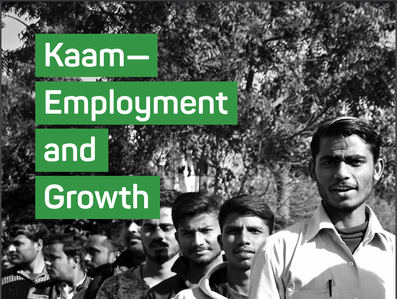
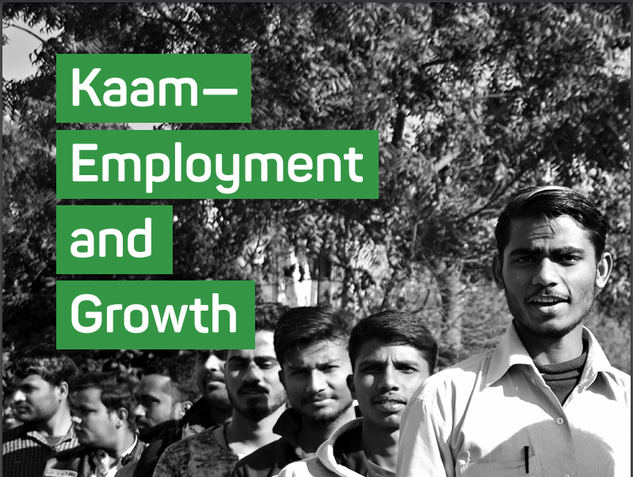
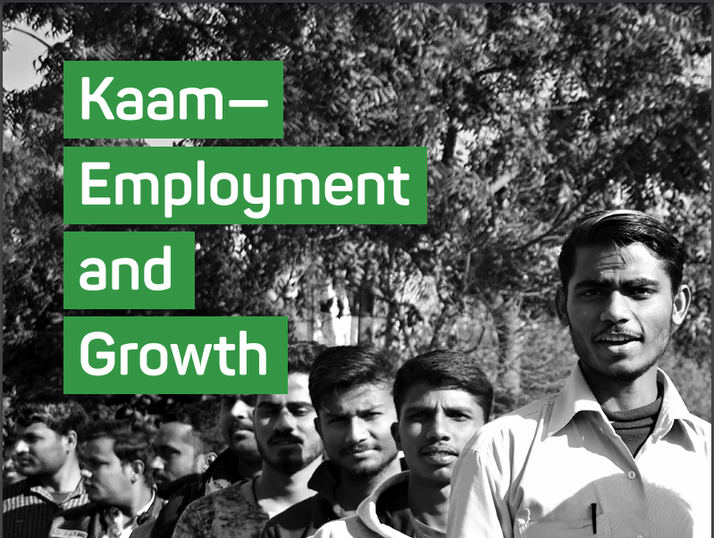
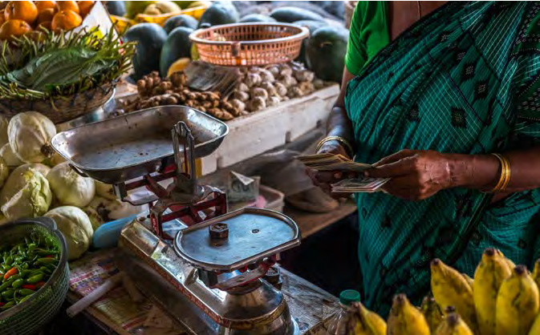

Unemployment is the gravest challenge to the country and job creation is the highest priority
for the economy. In the last 5 years, there has been a dramatic rise in unemployment. Today,
unemployment is touching a 45-year high of 6.1 per cent according to the government’s own
figures. The Centre for Monitoring Indian Economy puts the number at 7.2 per cent. At the
end of this February, 3.1 crore people were actively looking for jobs. Data indicates that total
employment has declined, the labour participation rate has declined and existing jobs have
been destroyed. Every section of society has been affected by growing unemployment and the
destruction of existing jobs: youth, families, women, small business persons, traders, farmers,
daily-wage workers and agricultural labourers.
Congress pledges to give the highest priorityto protecting existing jobs and creating new jobs.
In order to underline the link between the growth
of the industry and services sectors and rapid creation of jobs, Congress will create a new Ministry
of Industry, Services and Employment
All of the 4 lakh vacancies as on 1 April 2019in the Central Government, Central Public Sector
Enterprises, Judiciary and Parliament will be filledbefore the end of March 2020. As a condition for
devolution of funds to the healthcare and education sectors and to Panchayats and Municipalities,
Congress will request State Governments to fill allvacancies, estimated at 20 lakh, in the 2 sectorsand in local
bodies.
We will work with State Governments to createnew Seva Mitra positions (estimated at 10 lakh)
in every Gram Panchayat and every Urban LocalBody to ensure the effective delivery of government services to
citizens.
Application fees for government examinationsand government posts will be abolished.
Congress pledges to create lakhs of new jobs for qualified teachers, doctors, nurses, paramedics,
technicians, instructors and administrators througha massive expansion of the education andhealth sectors.
Para-state workers such as Anganwadi workers,ASHA workers, rozgarsahayaks, preraks, and anudeshaks, form the
backbone of the public service
delivery system. We will increase funding for the
relevant programmes and work with State Governments to ensure that all arrears are paid immediately. We will also
work with State Governments
and attempt to address all pending contentiousissues regarding their salaries and work conditions.
In addition, we will expand the ASHA programmeand appoint a second ASHA worker in all villages
with a population exceeding 2500 persons.
We will trigger rapid growth of the manufacturing sector, particularly of MSMEs, through the
provision of world-class infrastructure in industrial
hubs and cluster towns in order to aid the expansion of current units and the creation of new units.
MSMEs account for 90 per cent of all employmentoutside agriculture. The definition of MSMEs based
on capital employed is biased against labour.Congress will link the definition of MSME to
employment. A business employing 10 personsor less will be ‘micro;’ between 11 and 100 will
be ‘small;’ and between 101 and 500 will be‘medium.’
We will create an Enterprise Support Agency to help entrepreneurs, including start-ups, with
all-round business support including counselling,incubation, access to technology, funding, domestic
and export markets, and the creation of new products, services and intellectual property.
We promise regulatory forbearance for Microand Small Enterprises. They will be exempt from
all applicable laws and regulations (except theMinimum Wages Act and tax laws) for a period
of 3 years from 1 April 2019 or, in the case ofnew businesses, the date of commencement of
business. This means freedom from ‘Inspector Raj’until they stabilise.
Congress will promote ‘Mass Entrepreneurship’and support entrepreneurs to replicate tried and
tested models of businesses in order to meet thegrowing demand for such goods and services.
The main job-creating sectors are construction,textiles, leather, gems & jewellery, entertainment,
tourism and retail businesses. We will rewardbusinesses that create new jobs by lowering
the effective direct tax rates and by loweringcontributions to the CSR fund.
We will provide fiscal incentives to businesses that employ a certain percentage of women.
Exports create jobs. We will reward exportoriented industries through tax rebates
and incentives.
Tourism creates jobs. Congress promises an adequately capitalised Tourism Development Bank
to provide low-cost, long-term funds for investment in tourism-related businesses. We will also
offer lower rates of corporate and personal income tax on tourism-related business income
We recognise the need to create lakhs of lowskilled jobs in order to absorb young men and
women who have completed only a few years in school. Congress will launch 2 major programmes
to be implemented through Gram Sabhas and urban local bodies that will create 1 crore jobs:
a. Repair and restoration of water bodies
(‘Water Bodies Restoration Mission’); and
b. Regeneration and afforestation of wastelandand degraded land (‘Wasteland RegenerationMission’).
Congress will require businesses employing100 persons or more to start an apprenticeship
programme, impart skills, pay a stipend, andemploy from among the trained apprentices
whenever a job is created or becomes vacantin that business. We will amend The Companies
(Corporate Social Responsibility Policy) Rules,2014 to include ‘Apprenticeship’ as an additional
activity.
We will identify new kinds of jobs that will emergewith the advent of new technologies and will offer
opportunities to youth to acquire the skill-setsnecessary for these jobs.
Congress initiated liberalisation in 1991 with a new Industrial Policy. Taking note of the
changes in the global economy and the Indian economy, Congress promises another radical,
forward-looking Industrial Policy.
We promises to increase the share ofIndia’s manufacturing sector from the current
level of 16 per cent of GDP to 25 per cent within a period of 5 years and to make India a
manufacturing hub for the world. Congress believes that anything that can be made in another country can
be made in India. Congress promises that it will adopt policies, formulate rules, levy taxes and
reward entrepreneurship that will make India a renowned centre of manufacturing.
Congress will work with State Governments to set up New Industrial Towns with the
required infrastructure and turn them into manufacturing hubs for a variety of industrial products.
We will announce policies that will help Indiaretain its leading position in the manufacture
of engineering goods, petroleum products, gems& jewellery, drugs & pharmaceuticals, garments
& textiles and chemicals.
We will announce policies that will help India gaina leadership position in steel, metals, cement,
machinery, electronic goods, computer hardware,automobiles etc.
Congress will announce a ‘Make for the World’policy under which foreign and Indian companies
will be invited to invest in ‘Exclusive Export-onlyZones’, manufacture and export their entire production,
pay no indirect taxes and pay a low rate of corporate tax.
As the UPA did from 2004 to 2014, we will make a determined effort to revive stalled projects
and bring locked-up capital to use and generate employment.
We will promote the manufacture and export of India’s traditional products like handloom products
and handicrafts that employ lakhs of persons.
Congress will acquire patents, create a patent pool and make advanced technologies available to small
and medium businesses.
Controls have crept into the system in the nameof regulations. Congress promises to do a quick
review of the rules and regulations made by the BJP Government in the last 5 years and repeal
as many of them as are necessary to free industry and business from the ‘Control Raj.’
In the last 5 years, tax authorities have been given extraordinary discretionary powers that have
throttled industry and come to be described as ‘tax terrorism.’ Investigative agencies have misinterpreted
the laws and have instilled fear among businesspersons. Congress will review these
discretionary powers and arbitrary actions and take steps to allow industry and business to
function with a large degree of freedom.
A basic weakness of the Indian economy has been infrastructure. Flawed design, inefficient
execution, insufficient capacity and poor maintenance of infrastructure have dragged India’s
growth rate down.
Congress promises to address these deficiencies with a combination of planning, technology,
quality and accountability.
All available models and instrumentalities will be used to build infrastructure—public sector,
private sector and public-private partnership.
Roads, railway and electricity are among vital infrastructure. They are also crucial public goods.
Congress promises to augment the total length of national highways and increase the pace of
construction. The focus will be on improved design and quality, maintenance and accountability
Congress promises to massively modernise all outdated railway infrastructure. New projects
will be implemented in accordance with the best international standards of design and quality.
Road construction and railways can be built using private capital and capacity. Congress will use
sector-specific, tried and tested PPP models to increase the supply of these vital public goods.
Congress promises to review, re-formulate andimplement the policy on spectrum and on
exploration and extraction of natural resources.The policy will address issues of allocation, capital
investment, enhanced production, transparency, efficiency, risk-reward concerns, environmental sustainability,
inter-generational equity, accountability,
competition and appropriate sectoral regulation.
We will formulate a policy on Clean Energy in existing power plants that use fossil fuels and
promote Green Energy to enhance the share of solar and wind energy in the total supply of energy
Congress promises to enhance availability of, and access to, electricity in rural areas by encouraging
investment in off-grid renewable power generation with ownership and revenues vesting in
local bodies. Every village and every home will be electrified in the true sense. In the long term, we
aim to substitute LPG used in homes by electricity and solar energy.
India is fast urbanising. Nearly 34 per cent of our population lives in towns and cities and the
number is growing. As in the rest of the world, India’s cities can become engines of growth.
The Smart Cities Mission of the BJP government, which replaced the successful JNNURM,
was a colossal failure and a waste of money with no visible results.
Congress promises to augment the total length of national highways and increase the pace of
construction. The focus will be on improved design and quality, maintenance and accountability.
Congress promises to massively modernise all outdated railway infrastructure. New projects
will be implemented in accordance with the best international standards of design and quality.
Road construction and railways can be built usingprivate capital and capacity. Congress will use
sector-specific, tried and tested PPP models toincrease the supply of these vital public goods.
Congress promises to review, re-formulate andimplement the policy on spectrum and on exploration and extraction of
natural resources.
The policy will address issues of allocation, capital investment, enhanced production, transparency,
efficiency, risk-reward concerns, environmental sustainability, inter-generational equity, accountability,
competition and appropriate sectoral regulation.
We will formulate a policy on Clean Energy in
existing power plants that use fossil fuels and promote Green Energy to enhance the share of solar
and wind energy in the total supply of energy.
Congress promises to enhance availability of, and
access to, electricity in rural areas by encouraging investment in off-grid renewable power
generation with ownership and revenues vesting in local bodies. Every village and every home will be
electrified in the true sense. In the long term, we aim to substitute LPG used in homes by electricity
and solar energy.
Congress promises to formulate a comprehensive policy on Urbanisation after wide consultation.
We will address the issues concerning towns and cities including city governance, livelihoods,
housing, habitat, pollution, climate change, urban transport and disaster management.
Congress will support State Governments to build
new towns and cities as well as satellite towns.
Congress will introduce a new model of governance for towns and cities through a directly elected
mayor with a fixed term of 5 years, an elected Council and a separate administrative structure
for each urban body. The administration will be accountable to the Mayor and the Council and there
will be a provision to recruit technical experts and build capacity as well as multi-disciplinary teams
to do urban planning and implement municipal works.
We will enforce the 74th Amendment to the Constitution and ensure the devolution of powers,
functions and funds to the Municipalities and Corporations, making them financially independent.
Congress promises the Right to Housing for the urban poor and protection from arbitrary eviction.
We will build night shelters for the homeless so that no one will sleep in the open.
Congress will launch a Slum Upgradation and Transformation Scheme to ensure basic services
such as drinking water, electricity and sanitation to slum dwellers. Slums will be transformed by
replacing huts and kuchha dwellings with proper houses, roads and other public facilities.
Public spaces, public transport, public premises and other public facilities in towns and cities will
be made safe for women, children, persons with disabilities, migrants and marginalised sections of
society. More women will be appointed to government and municipal jobs in towns and cities.
Congress promises to formulate and implement a
policy on urban transport with emphasis on metro rail, suburban rail, electric vehicles, public bus
transport, hired vehicles and shared vehicles. We will encourage non-motorised transport, namely,
walking and cycling.
Congress promises to enhance infrastructure in rural areas and improve the quality of
public goods such as roads, bridges, water supply, sanitation, electricity and schools.
01. In order to fill the gaps in sector-specific schemes as well correct any unintended bias, we will
empower Panchayats and Municipalities to design and execute infrastructure projects.
Congress promises to establish a non-lapsable Rural Infrastructure Fund that will provide
loans and grants to specific infrastructure projects undertaken by Panchayats and Municipalities.
02. We will launch MGNREGA 3.0 to address issues of water security, soil quality and similar issues
that aggravate farmers’ distress. To this end, we will:
a. Increase the guaranteed days of employment up
to 150 days in cases where 100 days have been
achieved in a block/district;
b. Use MGNREGA labour in the Waterbodies Restoration Mission and the Wasteland Regeneration
Mission; and
c. Use MGNREGA funds to build public assets such
as primary health centres, classrooms, libraries
etc.
03. Congress promises to connect all villages and habitations with a population of 250 with a road
under the Pradhan Mantri Gram Sadak Yojana. Broadband connectivity will be provided to all
village Panchayats by the year 2021.
04. The allocation to the National Drinking Water Mission that has suffered neglect under the BJP
government will be increased.
05. We will pass the Right to Homestead Act to provide a homestead for every household that
does not own a home or own land on which a house may be built
Congress promises a fair deal for the crores of workers and the self-employed who toil
every day in the unorganised and informal sector.
We will encourage and support micro and
small enterprises that collectivise unorganised
sector workers including waste pickers and scrap
collectors.
02. Congress will ensure that notified minimum wages are paid to workers in the unorganised sector.
03. Congress will ratify ILO Convention 87 (Freedom
of Association) and ILO Convention 98 (Right to
Organise and Collective Bargaining).
04. The Street Vendors (Protection of Livelihood and
Regulation of Street Vending) Act, 2014 will be
implemented in letter and spirit.
05. Congress will guarantee portability for the ration
card possessed by a migrant worker and right to
access ration articles at the place of work.
06. Congress promises to establish Aajeevika
Kendras (Livelihood Centres) in all major cities
and towns where a migrant worker may register
himself/herself in order to:
a. Access government services;
b. Access basic healthcare;
c. Access crèches and schools for his
or her children;
d. Access skill development and training
centres; and
e. Access legal services
Many years ago, Jawaharlal Nehru said, ‘Everything can wait but not agriculture.’
In the last 5 years, under the BJP Government, the agriculture sector has been driven into
deep crisis. Adequate MSP was denied for 4 years; the procurement machinery was non-existent
or weak; debt of farmers mounted; prices of inputs increased steadily; credit was inadequate;
demonetisation devastated the cash-based agricultural economy; co-operative credit societies
and apex co-operative banks were denied the right to convert their deposits, thereby choking
co-operative credit to the farmer; the terms of trade moved decisively against agriculture; the
crop insurance scheme robbed the farmer and enriched the insurance companies; and with little
or no support from the government farmers and farm labourers were left to fend for themselves.
Congress has heard the cry of anguish of farmers and feels the pain of their acute distress.
Immediately after forming the governments in
Chhattisgarh, Madhya Pradesh and Rajasthan, as
promised, the 3 Congress Governments waived the
loans of farmers. Congress promises to waive the
outstanding farm loans in other States as well.
02. We will not stop with just providing “Karz Maafi”
or a loan waiver. Through a combination of remunerative prices, lower input costs, and assured
access to institutional credit, we will set our Kisans on the path to “Karz Mukti,” or Freedom from
Indebtedness.
03. Debt is a civil liability and we will not allow criminal proceedings to be instituted against
a farmer who is unable to pay his/her debt.
04. In order to ensure priority to the issues affecting the agriculture sector, we will present a separate
“Kisan Budget.”
Congress promises to establish a permanent
National Commission on Agricultural Development and Planning consisting of farmers,
agricultural scientists and agricultural economists to examine and advise the government on how to
make agriculture viable, competitive and remunerative. The recommendations of the Commission
shall be ordinarily binding on the government. The Commission will subsume the existing Commission
for Agricultural Costs and Prices and recommend appropriate minimum support prices
Congress also promises to establish a Commission on Marginal Farmers and Agricultural Labour
to advise on policies and programmes that will help them earn income from higher wages and
from non-crop based agriculture such as horticulture and floriculture, dairying and poultry.
07. We will completely re-design the BJP government’s failed Fasal Bima Yojana (Crop Insurance
Scheme) that has only enriched the insurance companies at the cost of the farmers. We will
direct insurance companies to offer crop insurance and charge premiums on the principle of ‘no profit,
no loss.’
Congress promises to work with State Governments to digitise land ownership and land tenancy
records and, in particular, recognise ownership and tenancy rights of women farmers and
ensure women get the benefits of agriculturerelated schemes.
09. Congress will promote Farmer Producer Companies/Organisations to enable farmers to access
inputs, technology and markets
We will review the prices of agricultural inputs,
extend subsidies where necessary, and establish
facilities to hire farm machinery.
11. Congress will repeal the Agricultural Produce Market Committees Act and make trade in
agricultural produce—including exports and inter-state trade—free from all restrictions.
12. We will establish farmers’ markets with adequate infrastructure and support in large
villages and small towns to enable the farmer to bring his/her produce and freely market the same.
13. Congress will formulate a policy on export and import of agricultural products that will support
farmers and Farmer Producer Companies/Organisations and enhance their income
Congress promises to formulate a policy to enable
the construction of modern warehouses, cold
storage and food processing facilities in every
block of the country.
15. We will revive, strengthen and improve the old system of ‘Agricultural Extension Services’
and bring the best knowledge and best practices to every agricultural holding in the country.
16. Congress will encourage farmers to diversify into the production of local varieties of millets and
pulses that can be procured for the PDS, Mid-Day Meals Scheme and the ICDS programme.
17. Congress promises a major programme to promote horticulture, pisciculture and sericulture for
diversification and greater income for farmers. We will launch a national project to double the value
of production in 5 years in dairying and poultry
18. Congress will promote organic farming, encourage farmers to use mixed fertilizers and pesticides,
support verification of organic products, and help them secure better prices for organic products.
19. Congress promises to double the funding in 5 years for teaching, R&D, agriculture-related
pure sciences and applied science and technology in the agricultural sector. We will establish a
College of Agriculture and a College of Veterinary Sciences in every district of the country.
20. Congress promises that the distortions that have crept into the text and the implementation of the
Land Acquisition, Rehabilitation and Resettlement Act, 2013 and the Forest Rights Act,
2006 will be removed and the original purposes of the Acts restored and enforced.
21. The Essential Commodities Act, 1955 belongs to the age of controls. Congress promises to
replace the Act by an enabling law that can be invoked only in the case of emergencies.
22. Building on past experience, Congress will re-design MGNREGA and provide for:
a. Increasing the guaranteed days of employment up to 150 days in cases where 100 days have
been achieved in a block/district;
b. Use of labour in the Waterbodies Restoration and the Wasteland Regeneration Missions;
c. Building village-level assets such as primary health centres, classrooms, libraries etc.
India is a developing country aspiring to be a middle-income country by the year 2030.
Wealth creation and the welfare of our people are our 2 principal goals.
Congress economic philosophy is based on embracing the idea of an open and liberal market
economy, creation of wealth, sustainable development, reduction of inequalities and assurance
of welfare of all sections of the people. Such growth will be driven by the private sector and a
viable public sector and underpinned by a robust system of social security.
Our economy is still over-regulated. Structural problems remain. Government control and
bureaucratic interference are aplenty. Regulators have morphed into controllers. There is
growing interference by the courts in economic policies. The BJP Government has reversed
the clock of reforms. Congress promises to undo these distortions and restore an open,
liberal market economy
Fiscal stability is the starting point. Congress
promises to reverse the BJP Government’s fiddling
with the target of fiscal deficit. Congress promises to achieve the target of 3 per cent of GDP by
2020-21 and remain under that limit. The revenue
deficit will be contained, as far as possible, under
1 per cent of GDP. Off-Budget and extra-Budget
borrowings will be faithfully reported with the justification for such debt and the means of servicing
and repaying such debt.
02. Monetary policy is the province of the Reserve
Bank of India. Congress promises to reverse the unwarranted and illegal interference by the
BJP government into the functioning of the RBI.
Congress will respect the autonomy of the RBI
in matters reserved to the RBI under the Reserve
Bank of India Act, 1939, including the formulation
of monetary policy. However, the Governor shall periodically render an account to a committee of Parliament.
Congress promises that the government
will work closely with the RBI to ensure that fiscal
policy and monetary policy are aligned to achieve
the common goal of growth with price stability.
03. Sustained economic growth is the path toward
creating wealth. Millions of people produce goods and services and they must have a large degree
of freedom, unfettered by excessive regulations.
Congress will provide a conducive policy climate
that will recognise the contributions of the private sector and the public sector, promote entrepreneurship,
encourage innovation, and employ
advanced technology and reward risk-taking.
04. We are the party that first declared the criticality
of high and sustained economic growth measured by GDP. Congress reiterates its firm belief in a high rate of growth
of GDP. Hence, the 4 drivers
of economic growth are important and the Congress wishes to state its position on each of these:
a. Private Investment: In an open, market economy, the private sector must play the lead role in
identifying opportunities, mobilising resources, adopting advanced technology, producing goods
and services, and securing domestic and foreign markets. Congress promises to extend full
support to the private sector and to revive the animal spirits of our entrepreneurs.
b. Government Expenditure: Government expenditure must play a lead role in the creation and
provision of public goods. Congress promises adequate expenditure on roads, railways,
waterways, drinking water, sanitation, healthcare, education, national and internal security.
c. Domestic Consumption: In a developing
country, rise in consumption is a sign of healthy economic growth. It is important that the poorer
sections of our people consume more. Supply of goods and services must be abundant and prices
must be reasonably stable. Congress will repose faith in the trading community and create a
policy environment that will encourage domestic consumption.
d. Exports: No country has achieved high economic growth without high growth of exports.
An example is India during the Congress period from 2004 to 2014. Congress will adopt a
policy on foreign trade that will ensure that exports become, once again, a key driver of
economic growth.
The abolition of poverty remains the foremost goal of the Congress. We recall with pride that
the Congress-led UPA government lifted 14 crore people out of poverty between 2004 and
2014.
It is true that rapid and broad-based growth will reduce poverty and, in the medium to long
term, eliminate poverty. On the other hand, decisive and focused intervention has the capacity to eliminate poverty
within a decade. Congress, therefore, sets the goal of elimination of
abject poverty by the year 2030
Congress believes that the size of India’s GDP and
the level of Total Expenditure (Central and State Governments) allow us to undertake an ambitious
programme of cash transfer to the poorest sections of the people without in anyway affecting the
goal of fiscal prudence. The main features of the
Minimum Income Support Programme (MISP) or Nyuntam Aay Yojana (NYAY) will be:
a. The target population will be 5 crore families who constitute the poorest 20 per cent of all
families. They will be the beneficiaries of MISP or NYAY;
b. Each family will be guaranteed a cash transfer of Rs. 72,000 a year;
c. As far as possible, the money will be transferred to the account of a woman of the family who
has a bank account or who will be urged to open a bank account;
d. There will a Design phase (3 months) followed by a Pilot and Testing phase (6–9 months)
before roll-out;
e. The rollout will be implemented in phases;
f. The estimated cost will be per cent of GDP in Year 1 and per cent of GDP in Year 2 and
thereafter.
g. As the nominal GDP grows and families move out of poverty, the cost will decline as a proportion of GDP.
02. Congress will appoint an independent panel of eminent economists, social scientists and
statisticians to oversee the design, testing, rollout and implementation of the programme. The
programme will move from one stage to the other only after a ‘go ahead’ from the panel. Congress
intends to implement NYAY as a joint scheme of the Central and State Governments. The
scheme will be funded through new revenues and rationalisation of expenditure. Current merit subsidy
schemes that are intended to achieve specific objectives will be continued.
03. The Congress goal is that ‘No Indian Family Shall Be Left Behind.
The 2 major taxes that will be the backbone of the economy are Income Tax and Goods and
Services Tax. Congress reiterates its firm belief that the principles underlying these taxes
should be simplicity, transparency and progressivity. Besides, a good tax administration
must place trust in, and enjoy the trust of, taxpayers. Congress will put an end to the tax
terrorism unleashed by the BJP government that has put uncertainty and fear in the minds
of individuals and businesses.
Direct Taxes Code
01. Congress promises to enact the Direct Taxes Code in the first year of our government. It will usher in
an era of simplicity, transparency, tax equity, easy compliance and impartial administration.
02. Congress promises that the Direct Taxes Code will levy taxes at reasonable and progressive rates having regard
to the level of current
incomes, income inequalities and the principles of tax equity
Goods & Services Tax 2.0
01. Congress promises to review and replace the current GST laws with the GST 2.0 regime that
will truly reflect the intent and purpose of a non-cascading, value-added, indirect tax.
02. The GST 2.0 regime will be based on a single, moderate, standard rate of tax on all goods
and services. The rate will be revenue neutral to the current indirect tax revenues of the Central
and State Governments and will take note of the potential of GST 2.0 to boost their tax revenues.
03. The GST 2.0 regime will levy a special rate of duty on demerit goods.
04. GST 2.0 will be easy to administer, easy to understand by the taxpayer, and easy to comply
with. We are confident that GST 2.0 will promote growth, new businesses and employment. The
website under GST 2.0 will be re-designed and made user-friendly with inputs from the taxpayers.
05. Congress promises that Real Estate (all sectors), Petroleum Products, Tobacco and Liquor will be
brought within the ambit of GST 2.0 in a manner and time period not exceeding 2 years agreed to
in the GST Council.
06. Essential goods of mass consumption (such as food grains, lifesaving drugs, vaccines, etc.) and
essential services will be exempted from GST 2.0 or zero-rated.
07. All goods and services that are exported will be zero-rated and not subject to GST 2.0.
08. Congress promises that threshold exemption for
small businesses will not be affected by inter-state supply of goods or services.
09. In order to support small, unregistered businesses that supply goods and services, there will be
no GST liability on the purchaser through the reverse charge mechanism.
10. Congress promises to abolish the e-way bill. Tax evasion will be detected through the risk
management mechanism and strengthening the intelligence machinery.
Congress affirms its belief in a competitive banking and financial sector.The BJP government has considerably
weakened the banking sector in the last 5 years; there has
been a sharp rise in non-performing assets; crony capitalism has thrived; and deserving sectors and individuals have
been denied credit. Congress promises to reverse these developments
Congress promises a comprehensive review of
the concept, role and functions of Public Sector
Banks (PSBs) in order to make PSBs robust and
competitive with healthy balance sheets.
02. Congress will amalgamate 2 or more PSBs so
that there will be only 6-8 PSBs with a national
presence and reach. Each of the amalgamated
PSBs will be adequately capitalised.
03. We will undertake a comprehensive review of the
governance structure of PSBs and implement
changes to make the PSB an independent commercial banking organisation that is competitive,
healthy, efficient and profitable. We will abolish
the redundant Banking Board Bureau.
04. Congress promises that PSBs will continue to implement policies to serve the larger public interest
including lending to priority and other disadvantaged sectors that are denied adequate credit.

05. We are concerned by the recent failure of some
NBFCs that has affected the bond market, mutual
funds and the flow of credit. Congress promises
to review and strengthen the regulatory regime
of NBFCs in order to prevent such failures and to
restore investor confidence.
06. We will take the necessary policy and administrative measures to develop a robust, deep and liquid
corporate bond market, municipal bond market
and infrastructure investment trusts.
07. Congress promises to promote new Development
Banks in order to provide long-term credit to
development and infrastructure projects.
08. Indian-owned new technology companies face a
stiff capital barrier when they are poised to scaleup to global size and standards. Congress will
set up an India Global Companies Fund and
create a policy environment to support Indianowned companies to become global companies.
09. Congress will encourage the establishment
of State-level and Regional-level institutions,
including small banks, to provide bank credit
to MSMEs. Congress will also encourage State
Governments to revive State Financial Corporations
to provide long-term credit and risk capital to
MSMEs.
10. We will strengthen and technologically-enable
Regional Rural Banks and Banking Correspondents to accelerate financial inclusion so that
citizens are provided banking services in their
neighbourhood.
Investment in science, technology and innovation is an investment in the future of the
country. Development of scientific temper and inculcating a spirit of inquiry are critical for
India’s progress.
Congress promises to work with industry to increase the expenditure on science and technology to 2 per cent of GDP.
02. Congress promises to allocate sufficient funds to promote science, technology and innovation.
03. Congress promises to recruit more scientists to the various institutes of research and development
and to fill all current vacancies in the posts of researchers and scientists within 12 months.
04. We will strengthen Science Departments in NAAC-graded colleges and universities, provide
them funds for equipment, laboratories and more teachers, and encourage them to publish their research.
05. Congress promises to strengthen patent laws and support Indian inventors and innovators to secure
international patent protection.
06. We will create a patent pool, acquire patents and allow access to patented technology to businesses
at affordable cost.
07. We will revitalise the National Innovation Council and make it the premier body to formulate, debate, analyse
and implement strategies
for innovation and for the deployment of innovative technologies in different areas.
08. We will establish a National Mission focused on sunrise technologies such as Big Data,
Machine Learning, Internet of Things, 3-D Printing and Manufacturing, and Knowledge Networks.
09. Congress promises to enhance the India Inclusive Innovation Fund to provide funds to innovative
enterprises to scale-up and expand their operations as well as engage with persons at the bottom of the economic
pyramid in order to promote innovation at the grassroots.
10. Congress will set up a Scenario Planning and Strategic Futures Office to look at mediumto-long term strategic
opportunities and risks
for the country as an aid to informed policy making
Over 140 lakh Indians depend, directly or indirectly, on fishing as a source of livelihood.
Congress is committed to faster growth of the fisheries industry.
01. Congress will establish a separate Ministry of Fisheries and Welfare of Fisherfolk.
02. We will constitute a National Fisherfolk Commission to promote fishing and the welfare of fisherfolk. It will
address indebtedness and appropriate
funding mechanisms for fishing.
03. Congress promises to recognise inland fishing and aquaculture as ‘agriculture’ and extend to
them all the benefits available to agriculture.
04. Congress promises to establish a permanent mechanism with neighbouring countries, e.g.
Sri Lanka and Pakistan, to resolve problems faced by fisherfolk and to eliminate conflict, violence,
coercive action and loss of lives, and to improve the livelihood opportunities of the fishing community
Congress will reverse the trend of declining defence spending under the NDA government, and will ensure that defence spending is increased to meet the requirements of the Armed Forces. We will expedite all modernisation programmes of the Armed Forces in a transparent manner, categorically address any remaining anomalies in one-rank one-pension for our Armed Forces, and improve social security, education and health facilities for our Paramilitary Forces and families.
National security is dependent on a sound defence policy, a sound foreign policy and wise
leadership. National security is not enhanced by chest-thumping or exaggerated claims.
01. Congress will reverse the trend of declining defence spending under the NDA government, and
will ensure that defence spending is increased to meet the requirements of the Armed Forces.
We will expedite all modernisation programmes of the armed forces in a transparent manner.
02. Congress promises to take strategic and hard measures to defend the territorial integrity
of India and ensure the safety of our people.
03. The concept of national security in the 21st century has expanded beyond defence of the territory to
include data security, cyber security, financial security, communication security and security of
trade routes. Congress promises to evolve suitable policies to address each of these subjects.
04. Congress will establish the office of Chief of Defence Staff (CDS) to be the principal adviser to
the Government on matters relating to defence.
05. Congress will provide a statutory basis to the National Security Council (NSC) and the
office of National Security Adviser (NSA). Their powers and functions will be defined under the law
and both authorities, and the agencies under them, will be accountable to Parliament.
06. The BJP government left the National Security Advisory Board in limbo between January 2015
and October 2016 and then truncated the body. Congress will re-establish the NSAB, provide a
statutory basis to the body, appoint experts from different disciplines and ensure that it will function
as a permanent, professional advisory body advising the NSC and the government.
Sushasan—
Good
Governance
Through
Independent and
Accountable
Congress will restore the dignity, authority and autonomy of our public institutions, which has been eroded by the
NDA government, while making
them accountable to Parliament. We believe that self-regulation is the best way to correct the abuse of media
freedom. We will amend the Press
Council of India Act, 1978 to strengthen the system of self-regulation, protect the freedom of journalists, uphold
editorial independence and
guard against government interference.
Healthcare, is a public good. Full healthcare is the right of every citizen— child, adult and senior citizen.
Providing healthcare is a shared responsibility of the Central and State Governments. We
recognise that the principal responsibility for providing primary and secondary healthcare
lies with the State Governments and the principal responsibility for providing tertiary and
super-specialty healthcare lies with the Central Government.
01. Congress promises that the total government expenditure on healthcare will be doubled to
3 per cent of GDP by the year 2023-24. The Annual Budgets will indicate the step up in each
year in order to achieve the target in 2023-24.
02. Congress promises to enact the Right to Healthcare Act that will guarantee to every citizen
the right to healthcare services, including free diagnostics, out-patient care, medicines and
hospitalisation through a network of public hospitals and enlisted private hospitals.
03. We are of the firm belief that the insurance-based model cannot be the preferred model to provide
universal healthcare in our country. Congress promises to vigorously promote and implement
the free public hospitals-model to provide universal healthcare.
04. Congress will substantially expand the free Dial-an-Ambulance service and put on the road more ambulances in all
the districts of India.
05. Trauma and Emergency Centres will be established on all National and State Highways to cater
to the travelling public as well as the population in the surrounding area.
06. We will expand child healthcare services (pre-natal, post-natal and pediatric) and geriatric
services in all public hospitals.
07. We will implement the Clinical Establishments
Act, 2010 to bring accountability to the functioning of private and public clinical establishments.
08. Congress promises to promote, and eventually mandate, the digitisation of medical records
on the foundation of a robust ICT infrastructure with suitable provisions for privacy, mobility and
inter-operability.
09. We promise to formulate a National Telemedicine Policy based on international best practices.
10. India’s current doctor to population ratio is 1:1681 and government doctor to population ratio is
1:11,528. Congress promises to increase the number of doctors, including specialist doctors,
significantly by establishing more medical colleges, increasing the capacity of medical
colleges and providing scholarships and loans to medical students.
Education is a merit good and must be available to all children as a public good. Congress
promises that State and Central Governments shall be responsible for providing educational
opportunities to all children. Schools, colleges and universities shall be, mostly, public institutions funded
through public resources. Private educational institutions may supplement public
educational institutions.
Congress will propose that School Education be transferred to the State List in the Seventh
Schedule of the Constitution while retaining the subject of Higher Education in the Union List.
Congress promises that school education from Class I to Class XII in public schools shall be
compulsory and free. Suitable amendments will be made in the Right to Education Act, 2009. We
will end the practice of charging special fees for different purposes in public schools.
We are deeply concerned about the quality of education and poor learning outcomes as reported
in the Annual Survey of Education Report (ASER). Congress promises to attach the highest importance to learning
outcomes.
The teacher is the pivot around whom the entire system of education revolves. Teacher training
and the continuing education of teachers are the key to quality instruction. Congress promises to
increase the capacity, number and quality of Teacher Training Institutes set up by the government.
Regulation of Teacher Training Institutes will be the responsibility of the National Council for Teacher
Education and their funding will be the responsibility of the University Grants Commission or its
successor. A scheme for the periodic and continuing education of teachers will be implemented and
teachers will be required to mandatorily participate in the scheme.
Congress promises to double the allocation for Education to 6 per cent of GDP in the 5 years
ending 2023-24. A path forward will be laid down in the regular Budget for 2019-20 and specific
annual targets will be set.
The Right to Education Act brought to the fore critical deficiencies in the school systems across the
country. In States where the Act was implemented well, many of these deficiencies were rectified. But
much remains to be done, especially in the educationally backward districts of the States. Congress
promises increased expenditure to provide basic and adequate infrastructure in every school from
Class I to Class XII that will include classrooms, library, laboratory, playground, toilets, drinking
water, etc. Hostels will be constructed based on demand.
Congress promises to increase the number of Kendriya Vidyalayas and Navodya Vidyalayas
based on demand and with the co-operation of the State Governments.
It is a matter of grave concern that children drop out of school. We promise to arrest this trend and
ensure that every child completes 12 years of school education.
In order to ensure a uniform quality of education and to improve learning outcomes, Congress promises to employ
technology-enabled teaching
methods and technology-driven, personalised and adaptive learning tools in all schools.
The NEET examination is discriminatory against students from certain States. In addition, it interferes with the State Government’s right to admit
students domiciled in the State to medical colleges in that State. Hence, we will take measures to
dispense with the NEET examination and substitute it with a State-level examination of equivalent
standard, approved by the competent authority for admission to medical colleges in that State.
Colleges and Universities will be encouraged to award Deprivation Points to students seeking
admission based on gender, permanent residence in rural districts, first generation learner, etc. and
to admit such students to ensure diversity in the classroom.
College and University education must be funded in multiple ways. We promise to increase the
amount earmarked for grants to colleges and
universities.
Congress promises to increase the number of scholarships offered to students. Colleges and
universities will be encouraged to build endowment funds to support deserving poor students.
We will revive, redesign and expand the Education Loan programme. Applications will be received,
examined and sanctioned on a single portal and then assigned to the branch of a bank located
near the applicant’s residence or place of study for documentation and monitoring. No interest will be
charged during the period of study and until the student finds a job or earns through self-employment. Outstanding interest dues on old education
loans as on 31 March 2019 will be waived.
Congress will pass a Students Rights Bill to codify the rights and obligations of students
in colleges and universities